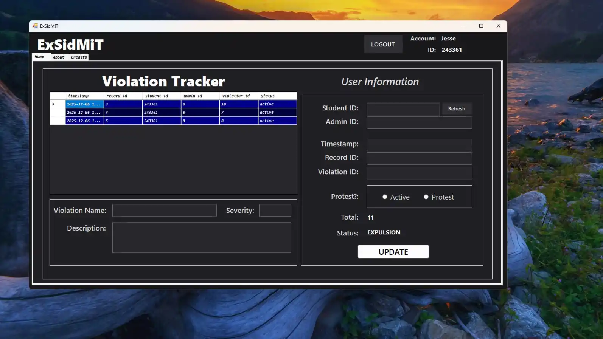
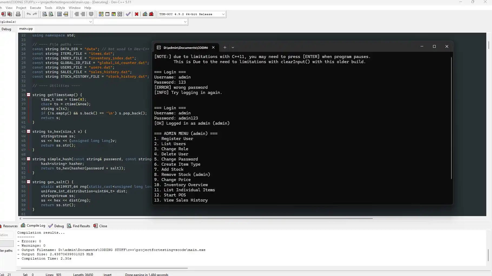
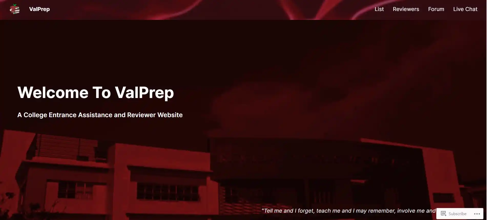
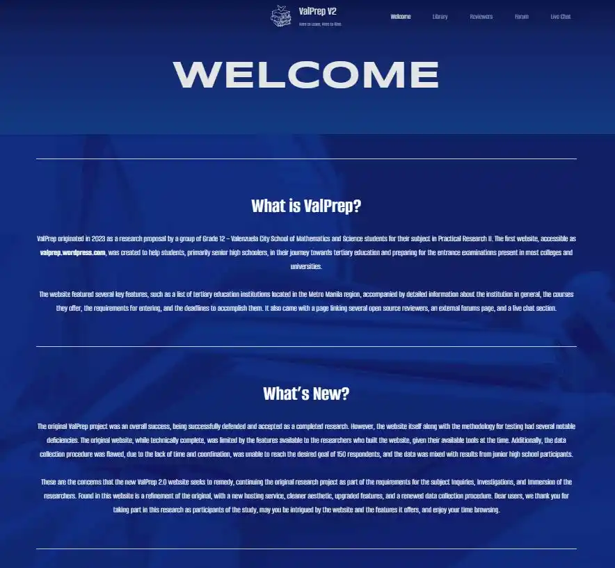
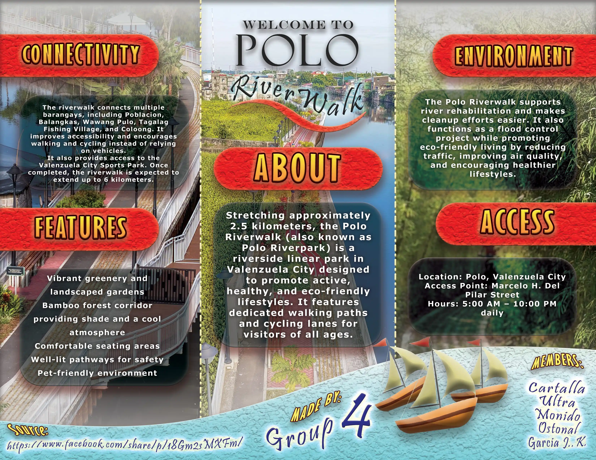
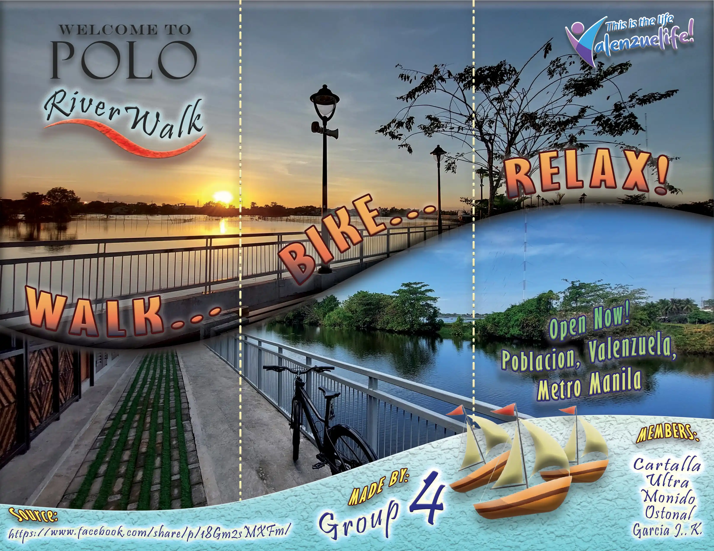

"BATA SA SANGA"
Description:
"Bata sa Sanga" is a 2D animated short film I made alongside a team of two other classmates as part of our requirement in "Reading Visual Arts". The story was the creation of Romy Moralyna, and was about a terrifying folk horror story about a ghostly appirition that haunted some fishermen.
My primary role was the animation itself; I handled the asset creation, the storyboarding, and the 2d puppetting animation. It was quite tedious work, and there were a lot of issues that I encountered along the way, but I also learned a lot from this experience, in particular the workflow and pipeline required to achieve a coherent animation.
Skills Developed:
- Storyboarding
- 2D Animation
- Grease Pencil (Blender)
- Adobe Animate
"EXSIDMIT"

Description:
EXSIDMIT is a mini-system developed as our final term project for both CC103 and IM101 classes; that is it is a joint project that requires integrating C# Graphical User Interface and an SQL Backend Database. Our group tackled the creation of a digitalized violation tracking system for Pamantasan ng Lungsod ng Valenzuela.
The main innovation of our program was that it not only provided a centralized control for the administration to handle violations (which was already available), but it also gave regular students their own user account so they can view and petition any violations under their name, ensuring transparency and communication.
I was responsible for most of the C# GUI development as well as the SQL database design and implementation. I had to redo the code 3 times as I switched from Microsoft SQL Server, to MySQL, to finally SQLite, which worked well for our need of making it a portable database transferrable along with the program files.
Skills Developed:
- Database Designing
- Software Development
- C# and SQL Integration
- Version Iteration
- Project Management
"EASY STOCK"

Description:
EASY STOCK is another mini-system developed as our final term project, this time for Data Structures and Algorithms. Admittedly my hardest project to date, it required us as a group to create a console-based inventory management system with an integrated Point of Sale module. Purely in C++, and required to save data persistently through text files.
The hard part about creating this program, was simply the c++ version we had to use; devc++ 5.11 is quite an outdated IDE, with the latest C++ version being an experimental version of C++11!. That caused me quite the grief when I first finished it and realized I was using a more up to date version with C++ 20 instead.
Admittedly, using SQL instead would have made this far easier and more capable than what we ended up creating, but the experience of designing and implementing the system purely through conventional (and legacy at that) programming software and techniques was quite the experience.
Skills Developed:
- Algorithm Design
- Logical Construction
- C++ Programming
- Legacy Code Handling
"VALPREP"


Description:
My first true IT Project, "VALPREP" is actually two different projects formed from a similar purpose: Primarily to serve as topic for our Quantitative and Mixed-Method research subjects during Grade 12. It was envisioned as an all-in-one website for identifying, reviewing, and discussing various topics regarding tertiary education, i.e. University Preparation.
The first website was incredibly challenging, what with my zero experience in this field at the time. It was built using wordpress.com, which made it incredibly tedious to work with as most features where locked behind paywalls. Learning from this mistake, I instead went for hostinger.com as it actually utilized the open-source wordpress builder (note that wordpress.com and .org are two different platforms).
Anyways, the second round (which was also a seperate research project) went far smoother, and applying what I learned from the first one, I was able to create a more efficient, responsive, and feature-packed website, with a couple dozen pages, and some integrated-chat functionality as well. Unfortunately, both websites are currently down as the subscription is now expired, but the experience stayed with me.
Skills Developed:
- Wordpress CMS
- Live Hosting
- Responsive Web Design
- Performance Optimization
- UI/UX Design
"RIVERWALK BROCHURE"


Description:
My latest project as part of our Multimedia course, we were tasked with creating a brochure for a local attraction or relevant location within Valenzuela City. Our group chose River Polowalk, one of the newer infrastructure projects in the city.
I was responsible for the majority of the design and layout of the brochure, and it was one of my most efficient projects to date. I applied the lessons we've learned since the start of our course into it's creation, and also learned about using guides and groups for the various layers and mask, while ensuring consistency and replicability within the design.
Skills Developed:
- Photoshop
- Layout Design
- Typography
- Color Theory
- Print Design
"ORDERTAKER"
Description:
"ORDERTAKER" is a satire music video that was inspired by the song of the same name. This was for our Contemporary World subject, and was originally supposed to be instead about the Coconut Song, but for some unforeseable reason, my teammates really didn't like that idea.
Aside from Video Editing, I also acted as the director and cinematographer of this project. While not my forte, I did enjoy the experience, and it was a great experience to learn what shots are needed for the video to work and how to get the shots.
Skills Developed:
- Music Video Editing
- Filmora
- Audio Mixing
- Cinematography
"LEGENDS OF WARAY"
Description:
Not my most polished work, but this was a result of the collaboration with my team to create a spin to our documentary project for our Readings in Philippine History. Instead of creating a conventional documentary, we opted for a gamefied approach to it, utilising pseudo-animations via built in tools within the Filmora Editor.
This was also one of the harder works I had to accomplish, as aside from being the primary animator/editor, I was also under extreme time pressure from our class, as little as two weeks for the entire 20 minute video! We also did a live interview for this project, but we sadly didn't manage to fit it in within the script and time constraint. Nevertheless, it was a fun, albeit hectic ride.
Skills Developed:
- Pseudo-Aniamtion
- Longform Editing
- Project Migration
- Asset Creation/Cleanup